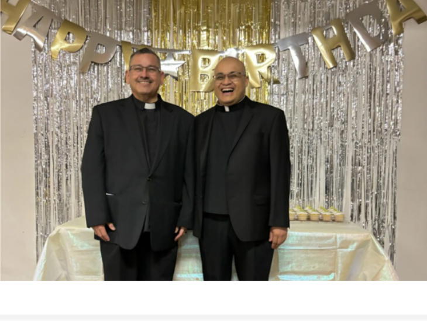

Pastor Rev. Toribio C. Guerrero
Parochial Vicar Rev. Juan Mercado
Deacons
Rev. Mr. Alberto De Jesús Brizuela
Rev. Mr. Marte Avila
Phone: 956-723-4267
Fax: 956-723-5754
Email: sec@christthekinglaredo.org

Contact
Have a question? Want to register as a parishioner? We'd love to hear from you.
Parish Office
1105 Tilden Ave., Laredo, TX 78040
Phone
(956) 723-4267
Parish Office Hours
Mon – Thu: 9:00 am – 12:00 pm and 2:00 pm – 5:00 pm
Fri: 9:00 am – 12:00 pm (closed after 12:00 pm)
Fri: 9:00 am – 12:00 pm (closed after 12:00 pm)
Religious Education Center (CCD)
Mrs. Virgina Ramirez
Email: cre@christthekinglaredo.org
Phone: 956-568-5181
Address:1118 Hendricks Ave.
Hours:
Saturday: 1:30 pm – 5:00 pm
Sunday: 10:00 am – 1:00 pm
Mon & Tue: 1:00 pm – 6:00 pm
Email: cre@christthekinglaredo.org
Phone: 956-568-5181
Address:1118 Hendricks Ave.
Hours:
Saturday: 1:30 pm – 5:00 pm
Sunday: 10:00 am – 1:00 pm
Mon & Tue: 1:00 pm – 6:00 pm
Anointing of the Sick (emergencies)
Call the parish office or follow the parish procedure for emergencies.
Send us a message